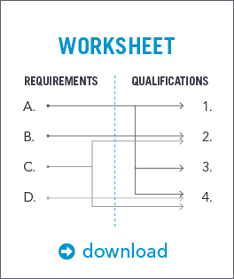

“Transitioning to civilian life wasn’t easy, and I want to share some lessons learned to hopefully make it easier for others.” - John Buckley, Koch Military Relations Manager
Resume Success
Securing a job in the civilian world starts with a solid resume, so build yours the best it can be.
15 Tips to Ready Your Resume
A solid resume could score you an interview for the job of your dreams, so make sure yours is well prepared.
-
Write to the job. Every job description is unique, so each resume should also be unique.
-
Eliminate the "objective" paragraph to give the recruiter more time on the body of your resume. If required, craft one specific to the targeted job and indicate an interest in modest advancement.
-
Your resume should not look like an efficiency report. Rather than duties, highlight accomplishments – show how you added value to your organization using quantifiable and measurable terms.
-
Never allow the recruiter to assume what skills you acquired through your experiences. Instead, clearly state them.
-
Write straightforward, active statements that showcase your relevant skills, experiences, accomplishments and certifications for all of the requirements listed in the job description. Provide the specifics of your accomplishments and how they contributed to the success of your previous organization. Quantify them if you can.
-
Don’t oversell your abilities. Just because you worked on a high-level staff does not mean that you are an executive leader.
-
Do include specific and relevant leadership and management experiences, especially if you are applying for a leadership or management role.
-
Limit your professional skills – also referred to as core competencies, areas of expertise or strengths – to four to six. Specialize and focus these to the job description, so the recruiter sees that your strengths are suitable for the responsibilities spelled out in the job description.
-
Servicemen and servicewomen are comfortable with diversity in the workplace and are uniquely educated and qualified to work on or lead diverse teams. Highlight any education, teamwork or experiences pertaining to diversity that you successfully led.
-
Highlight your risk management experiences and concentration on safety, emphasizing compliance and your ability to hold yourself and others accountable.
-
Mention teamwork, cooperation and collaboration – soft skills the business will most assuredly be looking for.
-
Be concise – Easy-to-read resumes get read. Reduce the amount of text on the page.
-
Other than job titles, remove EVERY military reference including ranks, organization names, titles, school names, equipment titles, etc.
-
Know your audience. Use words that are understood in the private sector or the specific business: enterprise, supervisor, director, manager, employees, etc.
-
Never use “I.”
*Though this list is not all encompassing, it was gathered from the experiences of one military veteran and verified by numerous other hiring managers and recruiters.
Beef it Up
Here are a few tips to pack a little more punch behind your resume descriptions.
Weak: Successfully planned current and future military training exercises for a battalion in excess of 1,000 personnel.
Stronger: Expert in analyzing operations and individual performance to identify organizational and individual training needs. Developed multiple training plans and inspections, which improved and sustained organizational performance.
Weak: “Best Platoon Leader” in a company of 150 personnel during a live fire training exercise resulting in the second-highest score in a battalion of more than 1,000 personnel.
Stronger: Critical thinking skills, risk and hazard awareness, and superb leadership led to being designated the top leader of 36 peers in the organization.
Weak: Recognized as the best squad leader in the battalion during Battalion Gunnery 2015.
Stronger: Recognized over 15 peers as the best leader in the organization due to critical and creative thinking, superior application of risk management and safety, and the ability to motivate a diverse team to excel.
Weak: Army Commendation Medal awarded by Major General ______, Commander of ______.
Stronger: Commended by the CEO for meritorious achievement resulting from enhanced dynamic operations while performing under pressure, and by meeting the needs of every customer through personal diligence.
Weak: Prepared and disseminated daily activity reports to higher command.
Stronger: Enabled senior management to make timely decisions by increasing their awareness on the organization’s overall performance by collecting relevant information, then drafting succinct reports.
Weak: Supervises or performs duties involving request, receipt, storage, issue, accountability, and preservation of expendable supplies and equipment.
Stronger: Improved the efficiency of several supply chains servicing multiple customers by identifying their particular needs and establishing priorities of effort. (You could also be more specific by quantifying how many units or customers you served.)
Weak: Maintains accounting system associated with supply management.
Stronger: Enhanced management of critical supply chains by ensuring the continuous flow of essential information through successful operation and maintenance of an enterprise-wide information technology system.
Leader vs. Manager: You “lead” people but you “manage” processes. Use “lead” or “led” when pertaining to people, but use “manage” or “managed” when referring to processes or programs.
Trim it Down
A lean resume helps you stand out. Check to be sure your information is relevant to the job description with this quick exercise.
-
Grab a pen and paper.
-
On the left, list the requirements detailed in the job description.
-
On the right, list the experiences, skills and certifications you detailed in your resume.
-
Connect the job requirements on the left to your list on the right.
-
If something on the right doesn’t connect to the left, you should probably remove it from your resume.
Exceptions: Retain quality comments that can quantify the value you created in leadership, management, risk management or diversity.
Takeaway
On a solid resume, job description requirements on the left will connect to a personal skill or experience you’ve listed on the right. Remember that these skills and experiences came directly from your resume. If they don’t match up, you might not be qualified for the job.
There should be little or nothing in your resume that doesn’t have a line going back to the job description. This ensures that you don’t conceal your relevant strengths with a lot of unnecessary verbiage.
Term Translator
Swap military jargon with universally understood words using this easy tool.
JOB TITLES
| Military | Business |
| Commander | Director or Senior Manager |
| Executive Officer | Deputy Director |
| Field Grade Officer | Executive or Manager |
| Company Grade Officer | Operations Manager or Section Manager |
| Warrant Officer | Technical Specialist or Department Manager |
| Senior NCO | First-Line Supervisor |
| Infantry | Security Personnel |
| First Sergeant | Personnel Manager |
| Squad Leader | Team Leader or Team Chief |
| Supply Sergeant | Supply Manager or Logistics Manager |
| Operations NCO | Operations Supervisor |
GENERAL TERMS
| Military | Business |
| AI | Additionally skilled in |
| Combat | Hazardous conditions |
| Company | Company, department or section |
| Medal | Award |
| Military personnel office | Human resources |
| Mission | Task/function/objective |
| Military occupation classification | Career specialty |
| Squad or platoon | Team or section |
| Reconnaissance | Data collection and analysis |
| Regulations | Policy or guidelines |
| Security clearance | Security clearance |
| Service members | Employees |
| Subordinates | Employees or direct hires |
| TAD or TDY | Business trip |
Interview Preparation
Your military skills are a true asset. Give yourself a little business spit shine and prepare to knock their civilian socks off.
Perceptions Are a Reality
As a veteran interviewing for a civilian role, your skills could be misinterpreted based on your delivery and demeanor. The following are common perceptions and some tips to keep in mind.
STRENGTHS:
Critical and creative thinking skills – Veterans often demonstrate these sought-after skills, which also offer a strong baseline for entrepreneurship.
Compliance – Top companies look for candidates who can balance requirements versus risk and have the ability to hold themselves and others accountable.
Sense of urgency – This is a strength, but do be careful. When overplayed, it can be perceived as too intense.
Compassion – Leaders and managers who exhibit compassionate leadership traits enable their team to reach self-fulfillment.
NEUTRAL:
Keep in mind that though you have strong attributes, broad experiences and valuable skills, you may be lacking experience in one or more critical areas.
WEAKNESSES:
Flexibility – Relax. Stiff posture and short responses feed the stereotype that military veterans are not flexible.
Humility – Rather than stating that everything you do is a success, show your dedication to truth, a willingness to listen and learn, and the ability to sincerely seek criticism.
Change – Be open to change. Military veterans are viewed as checklist-oriented, afraid of having their ideas challenged or challenging the ideas of others.
Emotion – The civilian world wants you to show a passion for your work and in the pursuit of your goals.
Word Choice – Eliminate military words and titles, also known as jargon. This avoids confusion and delivers your message or point more clearly.
Control – Exhibiting controlling leadership qualities feeds the perception that military veteran leaders are “drill sergeants.”
Intensity – Military leaders and managers can be stereotyped as “blindly charging the hill.” Be open to challenge and listening to the ideas of others.
Interview Pointers
To prepare for the Q&A portion of the interview, consider these specific trouble spots for veterans.
-
For situational-based questions, the interviewer is assessing your performance in the situation. Avoid answering in the typical military “bottom-line-up-front” method. Instead, address your actions, the response to your actions, your counter-action and the end result.
-
Avoid rambling responses. Instead, provide specific answers to the questions asked of you.
-
Recruiters report that veterans often don’t ask questions, even when given the opportunity, feeding the perception that the veteran is unwilling to learn.
Get a good night’s rest, check for pepper in your teeth and follow these other interview tips.
-
Be candid, honest, humble, professional, relaxed and confident. Most importantly, be yourself.
-
Think of the interview as a conversation, creating give-and-take with the interviewer.
-
Know the company’s general business situation. What service or product do they provide and for whom?
-
Understand the company’s culture and values. Show how your qualifications and experience contribute and add value to their business needs, and how your character aligns with their culture.
-
Come prepared with several interesting and unique questions. Always ask a question or two if given the opportunity.
-
Turn off your phone. Better yet, leave it in the car.
Download Our Guide
Save this guide to your computer or print it so you can reference it anytime.